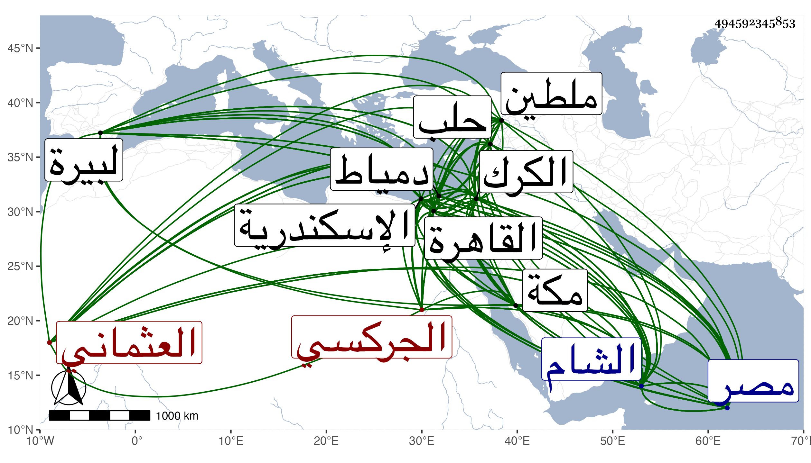

0902Sakhawi.DawLamic.ITO20230111-ara1.EIS1600.494592345853
Biography ID: 494592345853
48
برقوق بن أنص الظاهر أبو سعيد الجركسي العثماني نسبة لجالبه من جركس الخواجا عثمان ابتاعه منه يلبغا الكبير في سنة أربع وستين وسبعمائة واسمه حينئذ الطنبغا فسماه لنتوء في عينيه برقوقا وكان من جملة مماليكه الكتابية ثم كان بعد قتله فيمن نفي إلى الكرك ثم اتصل بمنجك نائب الشام وحضر معه إلى مصر فاتصل بالأشرف شعبان فلما قتل ترقى إلى إمرة أربعين وكان في جماعة من إخوته في خدمة أيبك البدري ثم لما قام طلقتمر على مخدومهم وقبض عليه ركب برقوق وبركة ومن تابعهما عليه وأقاما طشتمر العلائي بتدبير المملكة أتابكا واستمروا في خدمته إلى أن قام عليه مماليكه في أواخر سنة تسع وسبعين فآل الأمر إلى استقرار برقوق وبركة في تدبير المملكة بعد القبض عليه فلم يلبث أن اختلفا وتباينت أغراضهما وكان برقوق قد سكن الاسطبل السلطاني فأول شيء صنعه أن قبض على ثلاثة من أكابر الأمراء ممن كان في أتباع بركة فبلغه ذلك فركب على برقوق ودام الحرب بينهما أياما إلى أن قبض على بركة وسجن باسكندرية وانفرد برقوق بالتدبير مع تدبيره سرا الأمر لنفسه استقلالا إلى أن دخل رمضان سنة أربع وثمانين فجلس حينئذ وذلك في ثامن عشره على تخت الملك ولقب بالظاهر وبايعه الخليفة والقضاة والأمراء فمن دونهم ، وخلعوا الصالح حاجي بن الأشرف وأدخل به إلى دور أهله بالقلعة فلما كان بعد ذلك بمدة خرج يلبغا الناصري واجتمع إليه نواب البلاد كلها وانضم إليه منطاش وكان أمير ملطية ومعه جمع كثير من التركمان فجهز لهم الظاهر عسكرا بعد آخر فانكسروا فلما قرب الناصري من القاهرة تسلل الأمراء إليه إلى أن لم يبق عند الظاهر الا القليل فتغيب حينئذ واختفى في دار بقرب المدرسة الشيخونية ظاهر القاهرة فاستولى الناصري ومن معه على المملكة وأعيد حاجي ولقب المنصور واستقر الناصري أتابكا عنده وأراد منطاش قتل برقوق فلم يوافقه الناصري بل شيعه إلى الكرك فسجنه بها ثم لم يلبث أن ثار منطاش على الناصري فحاربه إلى أن قبض عليه وسجنه باسكندرية واستقل منطاش بالتدبير وكان أهوج فلم ينتظم له أمر وانقضت عليه الاطراف فجمع العساكر وخرج إلى جهة الشام فاتفق خروج الظاهر من الكرك وانضم إليه جمع قليل فالتقوا في شقحب بمنطاش فقدر أنه انكسر وانهزم إلى جهة الشام واستولى الظاهر على جميع الانفال وفيهم الخليفة والقضاة وأتباعهم فساقهم إلى القاهرة وصادف خروج المستخفين من مماليكه بقلعة الجبل وقوتهم على نائب الغيبة فدخل الظاهر فاستقرت قدمه بالقلعة وأعاد ابن الاشرف إلى مكانه من دور أهله كل ذلك في أوائل سنة اثنتين وتسعين ثم جمع العساكر وتوجه إلى الشام فحصرها في شعبان من التي تليها وهرع إليه الامراء وتعصب الشاميون لمنطاش فما أفاد بل انهزم منطاش بعد أن دامت الحرب بينهما مدة ووصل في تلك السنة إلى حلب وقرر أمر البلاد ونوابها وعاد إلى القاهرة في المحرم سنة أربع وتسعين ، واستقر قدمه في المملكة حتى مات على فراشه في ليلة نصف شوال سنة احدى بعد أن عهد بالسلطنة لولده فرج وله يومئذ تسع سنين لأنه ولد عند خروجه من الكرك ولذا سماه فرجا واستخلف القاضي الشافعي الخليفة وجميع الامراء وخلع عليه ويقال انه بلغ ستين سنة وكانت مدة استقلاله بأمور المملكة من غير مشارك تسع عشرة سنة وأشهرا ، ومدة سلطنته في المرتين ست عشرة سنة ونحو نصف سنة ، ومن آثاره المدرسة الفائقة بين القصرين لم يتقدم بناء مثلها في القاهرة وسلك في ترتيب من قرره فيها مسلك شيخون في مدرسته قرر فيها أربعة من المذاهب وشيخ تفسير وشيخ اقراء وشيخ حديث وشيخ ميعاد بعد صلاة الجمعة وغير ذلك وحبب الشريعة وانتفع به المسافرون كثيرا وأماكن بالمسجد الحرام وبعض المواليد وقبة عرفة وغير ذلك به وبالمدينة النبوية وأبطل ضمان المغاني بعدة بلاد منها منية بني خصيب والكرك والشوبك وكان الاشرف أبطله من الديار المصرية ومكس القمح بعدة بلاد أيضا وكذا أبطل ما كان يؤخذ من أهل البرلس وما حولها وهو في السنة ستون ألفا وعلى القمح بدمياط وعلى الفراريج بالغربية وعلى الملح بعنتاب وعلى الدقيق بالبيرة وعلى الدريس والحلفا بباب النصر ، وكان شهما شجاعا ذكيا خبيرا بالامور إلا أنه كان طماعا جدا لا يقدم على جمع المال شيئا ولقد أفسد أمور المملكة بأخذ البدل ... على الولايات حتى وظيفة القضاء والامور الدينية وكان جهوري الصوت كبير اللحية واسع العينين عارفا بالفروسية خصوصا اللعب بالرمح يحب الفقراء ويتواضع لهم ويتصدق كثيرا ولا سيما إذا مرض . وقد ترجمه الفاسي في مكة قال وله سيرة طويلة جمعها بعض أهل العصر في مجلد . قلت قد جمعها ابن دقماق ثم العيني ، وذكره المقريزي في عقوده وبيض له وأنه أول ملوك الجراكسة .
